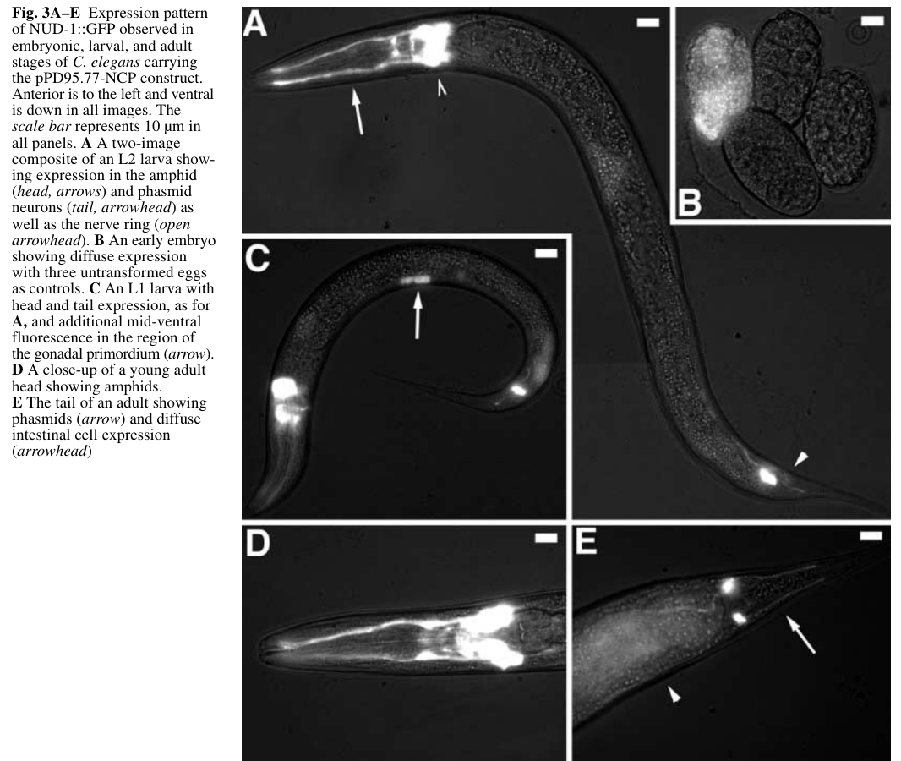

C. elegans NUD-1 (Nuclear migration protein nudC) is an evolutionarily conserved member of the NudC family that functions in nuclear migration, mitotic progression, and cytoskeletal dynamics. NUD-1 associates with microtubules and the dynein motor complex, working alongside LIS-1 to ensure proper cell division and nuclear positioning (PMID:11685578). The protein contains a conserved p23/HSP20-like domain (CS domain) and an N-terminal NudC domain. In vitro studies demonstrate that NUD-1 exhibits ATP-independent molecular chaperone (holdase) activity, preventing aggregation of citrate synthase and luciferase at stoichiometric concentrations, and protecting native enzyme activity from thermal inactivation (PMID:18626791). Importantly, NUD-1/substrate complexes are productive -- unfolded intermediates can be refolded by ATP-dependent chaperones, indicating NUD-1 acts as a holdase that maintains substrates in a refolding-competent state (PMID:18626791). NUD-1 is expressed in sensory neurons, embryos, gonad, gut, vulva, ventral cord, and hypodermal seam cells (PMID:11685578). RNAi knockdown causes embryonic lethality, sterility, altered vulval morphology, uncoordinated movement, and nuclear positioning defects in early embryonic cell division (PMID:11685578). NUD-1 is also required for completion of the first embryonic cytokinesis: its depletion causes loss of midzone microtubules and rapid regression of the cleavage furrow, producing binucleate one-cell embryos (PMID:12679384). Depletion of NUD-1 also leads to defective GABA synaptic vesicle trafficking and increased susceptibility to pentylenetetrazole-induced convulsions (PMID:16996038).
| GO Term | Evidence | Action | Reason |
|---|---|---|---|
|
GO:0005737
cytoplasm
|
IBA
GO_REF:0000033 |
ACCEPT |
Summary: IBA annotation for cytoplasmic localization, inferred phylogenetically from multiple orthologs including Drosophila, Arabidopsis, and human NudC proteins. Consistent with UniProt subcellular location annotation (Cytoplasm) and the known biology of NudC family proteins as cytoplasmic, microtubule-associated proteins. NUD-1::GFP fusion shows cytoplasmic expression in sensory neurons, embryos, gonad, gut, vulva, ventral cord, and hypodermal seam cells (PMID:11685578).
Reason: Cytoplasmic localization is well-established for NUD-1 and the NudC family. The IBA inference is consistent with UniProt annotation and direct GFP expression data in C. elegans (PMID:11685578).
Supporting Evidence:
PMID:11685578
A C. elegans nud-1::GFP fusion produces sustained fluorescence in sensory neurons and embryos, and transient fluorescence in the gonad, gut, vulva, ventral cord, and hypodermal seam cells.
|
|
GO:0006457
protein folding
|
IBA
GO_REF:0000033 |
ACCEPT |
Summary: IBA annotation for involvement in protein folding, inferred phylogenetically. NUD-1 has been demonstrated to exhibit chaperone activity in vitro (PMID:18626791), preventing aggregation of citrate synthase and luciferase. However, NUD-1 functions as a holdase rather than a foldase -- it prevents aggregation of unfolded substrates, which can then be refolded by ATP-dependent chaperones. The IBA annotation is consistent with the experimental evidence from PMID:18626791.
Reason: Protein folding is appropriate as a biological process annotation for a holdase chaperone, as NUD-1 maintains unfolded intermediates in a refolding-competent state that can be subsequently refolded by the cellular chaperone machinery (PMID:18626791). The IBA inference is supported by direct experimental evidence.
Supporting Evidence:
PMID:18626791
In the presence of NUD-1, nearly all of the luciferase activity was regained, indicating that unfolded intermediates complexed with NUD-1 could be refolded.
|
|
GO:0051082
unfolded protein binding
|
IBA
GO_REF:0000033 |
MODIFY |
Summary: IBA annotation for unfolded protein binding, inferred phylogenetically from NUD-1 itself (WB:WBGene00003829) and other orthologs. GO:0051082 is proposed for obsoletion. NUD-1 has been directly demonstrated to prevent aggregation of denaturing citrate synthase and luciferase (PMID:18626791), functioning as an ATP-independent holdase chaperone. However, NUD-1 is not a classical sHSP -- it is a NudC family protein with an HSP20-like fold (CS domain) whose primary role is in nuclear migration and cytoskeletal dynamics. The chaperone activity may be secondary to its role in mitotic complex assembly.
Reason: GO:0051082 is proposed for obsoletion. NUD-1 demonstrates holdase activity in vitro (PMID:18626791), preventing aggregation of denaturing substrates and maintaining them in a refolding-competent state. GO:0140309 (unfolded protein carrier activity) is not appropriate because it is carrier-specific (per go-ontology#30552). Retain until a holdase chaperone activity NTR is created.
Proposed replacements:
unfolded protein binding (retain until holdase NTR is created)
Supporting Evidence:
PMID:18626791
We demonstrate that nematode NUD-1 is able to prevent the aggregation of two substrate proteins, citrate synthase (CS) and luciferase, at stoichiometric concentrations.
|
|
GO:0045202
synapse
|
IEA
GO_REF:0000108 |
KEEP AS NON CORE |
Summary: IEA annotation for synaptic localization, inferred automatically from the GO:0051932 (synaptic transmission, GABAergic) annotation via inter-ontology logical inference. NUD-1 depletion causes defective GABA synaptic vesicle trafficking (PMID:16996038), which supports a role at synapses. However, this is an indirect inference -- NUD-1 may affect synaptic vesicle trafficking through its role in cytoskeletal dynamics (dynein/microtubule-dependent transport) rather than being a resident synaptic protein.
Reason: The inference from GABAergic synaptic transmission to synaptic localization is logically valid. NUD-1 depletion disrupts GABA synaptic vesicle trafficking (PMID:16996038), suggesting functional involvement at synapses. However, NUD-1 is primarily a cytoplasmic, microtubule-associated protein and its synaptic role is secondary to its core function in nuclear migration and chaperone activity.
|
|
GO:0005737
cytoplasm
|
IEA
GO_REF:0000044 |
ACCEPT |
Summary: IEA annotation for cytoplasmic localization based on UniProt subcellular location mapping. Consistent with the IBA annotation for the same term and direct GFP expression data (PMID:11685578).
Reason: Cytoplasmic localization is well-established. This IEA annotation is consistent with the IBA annotation and experimental evidence. Acceptable as automated confirmation.
|
|
GO:0006457
protein folding
|
IDA
PMID:18626791 The microtubule-associated protein, NUD-1, exhibits chaperon... |
ACCEPT |
Summary: IDA annotation for involvement in protein folding based on Faircloth et al. 2009 (PMID:18626791). The study demonstrated that recombinant NUD-1 prevents aggregation of citrate synthase and luciferase, protects native CS from thermal inactivation, and maintains unfolded luciferase intermediates in a refolding-competent state. This is directly supported by the luciferase refolding assay showing that unfolded intermediates complexed with NUD-1 could be refolded by rabbit reticulocyte lysate plus ATP.
Reason: Strong experimental evidence directly in C. elegans NUD-1 demonstrating chaperone activity that facilitates the protein folding process. NUD-1 acts as a holdase maintaining substrates in a refolding-competent state, which is part of the protein folding pathway (PMID:18626791).
Supporting Evidence:
PMID:18626791
In the presence of NUD-1, nearly all of the luciferase activity was regained, indicating that unfolded intermediates complexed with NUD-1 could be refolded.
PMID:18626791
NUD-1 also protects the native state of CS from thermal inactivation by significantly reducing the inactivation rate of this enzyme.
|
|
GO:0044183
protein folding chaperone
|
IDA
PMID:18626791 The microtubule-associated protein, NUD-1, exhibits chaperon... |
ACCEPT |
Summary: IDA annotation for protein folding chaperone molecular function based on Faircloth et al. 2009 (PMID:18626791). The study directly demonstrated that NUD-1 possesses ATP-independent chaperone activity comparable to small heat shock proteins and cochaperones. NUD-1 prevents aggregation of denaturing citrate synthase and luciferase at stoichiometric concentrations, and maintains substrates in a refolding-competent state. This is a more informative molecular function annotation than GO:0051082 (unfolded protein binding), as it captures the active chaperone function.
Reason: GO:0044183 (protein folding chaperone) accurately describes the molecular function of NUD-1 as demonstrated by in vitro chaperone assays (PMID:18626791). The term captures the holdase activity, including prevention of aggregation and maintenance of refolding-competent intermediates. This is a well-supported core molecular function annotation.
Supporting Evidence:
PMID:18626791
NUD-1 possesses ATP-independent chaperone activity comparable to that of small heat shock proteins and cochaperones and that changes in phosphorylation state functionally alter chaperone activity in a phosphomimetic NUD-1 mutant.
PMID:18626791
We demonstrate that nematode NUD-1 is able to prevent the aggregation of two substrate proteins, citrate synthase (CS) and luciferase, at stoichiometric concentrations.
file:worm/nud-1/nud-1-deep-research-falcon.md
NUD-1 is described as a microtubule-associated protein with in vitro chaperone activity, preventing heat-induced aggregation of citrate synthase and luciferase
|
|
GO:0051082
unfolded protein binding
|
IDA
PMID:18626791 The microtubule-associated protein, NUD-1, exhibits chaperon... |
MODIFY |
Summary: IDA annotation for unfolded protein binding based on Faircloth et al. 2009 (PMID:18626791). The study demonstrated that NUD-1 binds denaturing proteins (citrate synthase and luciferase) and prevents their aggregation. GO:0051082 is proposed for obsoletion. The more informative annotation GO:0044183 (protein folding chaperone) is already annotated with IDA evidence from the same publication, and GO:0140309 (unfolded protein carrier activity) would be the recommended replacement for the holdase function.
Reason: GO:0051082 is proposed for obsoletion. The holdase activity demonstrated in PMID:18626791 is not well captured by GO:0140309 (carrier-specific, per go-ontology#30552). GO:0044183 (protein folding chaperone) is already annotated from the same evidence. Retain until a holdase chaperone activity NTR is created.
Proposed replacements:
unfolded protein binding (retain until holdase NTR is created)
Supporting Evidence:
PMID:18626791
We demonstrate that nematode NUD-1 is able to prevent the aggregation of two substrate proteins, citrate synthase (CS) and luciferase, at stoichiometric concentrations.
|
|
GO:0048489
synaptic vesicle transport
|
IMP
PMID:16996038 Genetic interactions among cortical malformation genes that ... |
KEEP AS NON CORE |
Summary: IMP annotation for involvement in synaptic vesicle transport based on Locke et al. 2006 (PMID:16996038). The study used fluorescent markers for synaptic vesicle trafficking and found that depletion of NUD-1 (along with other LIS1 pathway components) resulted in defective GABA synaptic vesicle trafficking. This is consistent with NUD-1's role in dynein-dependent transport along microtubules.
Reason: The experimental evidence from PMID:16996038 supports involvement in synaptic vesicle transport, likely through NUD-1's role in the dynein motor complex and microtubule-based transport. However, this is a secondary consequence of NUD-1's core function in cytoskeletal dynamics rather than a specialized role in synaptic vesicle trafficking per se. Retained as non-core.
Supporting Evidence:
PMID:16996038
We found that depletion of LIS1 pathway components resulted in defective GABA synaptic vesicle trafficking.
|
|
GO:0051932
synaptic transmission, GABAergic
|
IGI
PMID:16996038 Genetic interactions among cortical malformation genes that ... |
KEEP AS NON CORE |
Summary: IGI annotation for involvement in GABAergic synaptic transmission based on Locke et al. 2006 (PMID:16996038). The study used genetic interaction experiments with LIS-1 pathway components (indicated by with/from WB:WBGene00003047) and pentylenetetrazole exposure to demonstrate that NUD-1 depletion affects GABAergic neurotransmission, resulting in convulsion susceptibility.
Reason: The genetic interaction evidence supports a role in GABAergic synaptic transmission, likely secondary to NUD-1's role in microtubule-dependent transport of synaptic vesicles. This is a non-core function reflecting the downstream effects of disrupted cytoskeletal dynamics on neuronal function.
Supporting Evidence:
PMID:16996038
Worms depleted for LIS1 pathway components (NUD-1, NUD-2, DHC-1, CDK-5, and CDKA-1) exhibited significant convulsions following PTZ and RNAi treatment.
|
|
GO:0040011
locomotion
|
IMP
PMID:11685578 Evolutionarily conserved nuclear migration genes required fo... |
KEEP AS NON CORE |
Summary: IMP annotation for involvement in locomotion based on Dawe et al. 2001 (PMID:11685578). RNAi knockdown of nud-1 resulted in uncoordinated movement, one of several pleiotropic phenotypes observed. This is a downstream consequence of NUD-1's role in neuronal development and function rather than a direct role in locomotion.
Reason: The uncoordinated movement phenotype from nud-1 RNAi (PMID:11685578) is a pleiotropic effect of disrupting this broadly required nuclear migration/ cytoskeletal dynamics gene, not a specific role in locomotion. Retained as non-core.
Supporting Evidence:
PMID:11685578
Phenotypic analysis of either nud-1 and lis-1 by RNA interference yielded similar phenotypes, including embryonic lethality, sterility, altered vulval morphology, and uncoordinated movement.
|
|
GO:0040025
vulval development
|
IMP
PMID:11685578 Evolutionarily conserved nuclear migration genes required fo... |
KEEP AS NON CORE |
Summary: IMP annotation for involvement in vulval development based on Dawe et al. 2001 (PMID:11685578). RNAi knockdown of nud-1 resulted in altered vulval morphology. nud-1::GFP shows expression in the vulva, and vulval development requires proper cell division and nuclear migration, consistent with NUD-1's core function.
Reason: Altered vulval morphology from nud-1 RNAi (PMID:11685578) is a pleiotropic phenotype consistent with disruption of nuclear migration and cell division in vulval precursor cells. nud-1::GFP is expressed in the vulva. Retained as non-core since vulval development is not the primary function of NUD-1.
Supporting Evidence:
PMID:11685578
Phenotypic analysis of either nud-1 and lis-1 by RNA interference yielded similar phenotypes, including embryonic lethality, sterility, altered vulval morphology, and uncoordinated movement.
|
|
GO:0009792
embryo development ending in birth or egg hatching
|
IMP
PMID:11685578 Evolutionarily conserved nuclear migration genes required fo... |
ACCEPT |
Summary: IMP annotation for involvement in embryo development based on Dawe et al. 2001 (PMID:11685578). RNAi knockdown of nud-1 caused embryonic lethality and nuclear positioning defects in early embryonic cell division similar to dynein/dynactin depletion. This is a core biological process for NUD-1 given its essential role in nuclear migration during cell division.
Reason: Embryonic lethality from nud-1 RNAi represents a core phenotype (PMID:11685578). NUD-1 is essential for proper nuclear positioning during early embryonic cell division, and its requirement for embryo development is a direct consequence of its core function in nuclear migration and mitotic progression.
Supporting Evidence:
PMID:11685578
Digital time-lapse video microscopy was used to determine that RNAi-treated embryos exhibited nuclear positioning defects in early embryonic cell division similar to those reported for dynein/dynactin depletion.
file:worm/nud-1/nud-1-deep-research-falcon.md
embryos usually arrested between comma and one-fold stages
|
|
GO:0035046
pronuclear migration
|
IMP
PMID:11685578 Evolutionarily conserved nuclear migration genes required fo... |
ACCEPT |
Summary: IMP annotation for involvement in pronuclear migration based on Dawe et al. 2001 (PMID:11685578). RNAi knockdown of nud-1 caused nuclear positioning defects in early embryonic cell division. Pronuclear migration is a dynein-dependent process, and NUD-1 functions with the dynein motor complex. This is a core biological process directly reflecting NUD-1's primary molecular role in nuclear migration.
Reason: Pronuclear migration is a core function of NUD-1, directly reflecting its primary role in nuclear migration via the dynein motor complex. The nuclear positioning defects observed after nud-1 RNAi (PMID:11685578) are consistent with the conserved role of NudC family proteins in nuclear migration from fungi to humans. The gene name itself (nuclear distribution) reflects this function.
Supporting Evidence:
PMID:11685578
Digital time-lapse video microscopy was used to determine that RNAi-treated embryos exhibited nuclear positioning defects in early embryonic cell division similar to those reported for dynein/dynactin depletion.
PMID:11685578
Heterologous expression of the C. elegans nudC ortholog, nud-1, complements the A. nidulans nudC3 mutant, demonstrating evolutionary conservation of function.
file:worm/nud-1/nud-1-deep-research-falcon.md
pronuclei moved inward but failed to rotate onto the anterior-posterior axis; nuclear envelope breakdown occurred on the dorsal-ventral axis
|
|
GO:0051932
synaptic transmission, GABAergic
|
IMP
PMID:16996038 Genetic interactions among cortical malformation genes that ... |
KEEP AS NON CORE |
Summary: IMP annotation for involvement in GABAergic synaptic transmission based on Locke et al. 2006 (PMID:16996038). NUD-1-depleted worms exhibited significant convulsions following PTZ treatment, and fluorescent markers showed defective GABA synaptic vesicle trafficking. This is a separate evidence line (IMP vs IGI) from the other GO:0051932 annotation for the same gene from the same paper.
Reason: This IMP annotation provides independent evidence from the IGI annotation for the same term. The convulsion susceptibility phenotype after NUD-1 depletion (PMID:16996038) supports involvement in GABAergic signaling, but this is a secondary function stemming from NUD-1's role in microtubule-based transport. Retained as non-core.
Supporting Evidence:
PMID:16996038
Worms depleted for LIS1 pathway components (NUD-1, NUD-2, DHC-1, CDK-5, and CDKA-1) exhibited significant convulsions following PTZ and RNAi treatment.
|
|
GO:0000281
mitotic cytokinesis
|
IMP
PMID:12679384 Role for NudC, a dynein-associated nuclear movement protein,... |
NEW |
Summary: NEW annotation proposed from Aumais et al. 2003 (PMID:12679384), which was not
represented in the original GOA/UniProt set. RNAi gene silencing of nud-1 in
C. elegans caused loss of midzone microtubules and rapid regression of the
cleavage furrow, producing one-celled embryos containing two nuclei - a defining
cytokinesis-failure phenotype. The falcon deep research synthesis further
quantifies this (midzone microtubules absent in 26% and weak in 74% of one-cell
embryos) and frames NUD-1 as required for late cytokinesis via midzone
microtubule organization, mechanistically consistent with the conserved
NudC-family role in midzone/midbody microtubule organization during cell division.
Reason: Aumais et al. (PMID:12679384) provide direct experimental (RNAi) evidence in
C. elegans that NUD-1 is required for completion of the first embryonic
cytokinesis: its depletion blocks midzone microtubule formation and causes
cleavage-furrow regression, yielding binucleate one-cell embryos. The phenotype
occurs in the early embryonic mitotic division, so the directly-annotatable term
GO:0000281 (mitotic cytokinesis) is appropriate. IMP with a verified primary PMID
is a valid evidence/reference pairing for this RNAi loss-of-function phenotype.
This complements the existing pronuclear-migration/nuclear-positioning annotations
and captures the second worm-established arm of NUD-1 function.
Supporting Evidence:
PMID:12679384
Gene silencing of nud-1, the Caenorhabditis elegans ortholog of NudC, led to a loss of midzone microtubules and the rapid regression of the cleavage furrow, which resulted in one-celled embryos containing two nuclei.
file:worm/nud-1/nud-1-deep-research-falcon.md
cleavage furrows stalled or regressed, producing multinucleated one-cell embryos
file:worm/nud-1/nud-1-deep-research-falcon.md
Midzone microtubules were absent in 26% (10/39) of one-cell embryos and weak/poorly defined in 74% (29/39)
|
The research report should be a detailed narrative explaining the function, biological processes, and localization of the gene product. Citations should be given for all claims.
You should prioritize authoritative reviews and primary scientific literature when conducting research. You can supplement
this with annotations you find in gene/protein databases, but these can be outdated or inaccurate.
We are specifically interested in the primary function of the gene - for enzymes, what reaction is catalyzed, and what is the substrate specificity? For transporters, what is the substrate? For structural proteins or adapters, what is the broader structural role? For signaling molecules, what is the role in the pathway.
We are interested in where in or outside the cell the gene product carries out its function.
We are also interested in the signaling or biochemical pathways in which the gene functions. We are less interested in broad pleiotropic effects, except where these elucidate the precise role.
Include evidence where possible. We are interested in both experimental evidence as well as inference from structure, evolution, or bioinformatic analysis. Precise studies should be prioritized over high-throughput, where available.
The target gene nud-1 in C. elegans corresponds to the fungal nudC ortholog located on cosmid F53A2 (ORF F53A2.4), consistent with the UniProt entry G5EE74 (NudC family). Dawe et al. explicitly identify nud-1 as the C. elegans nudC ortholog and demonstrate functional conservation by complementation in Aspergillus nidulans (dawe2001evolutionarilyconservednuclear pages 1-2, dawe2001evolutionarilyconservednuclear pages 2-3). Aumais et al. subsequently describe nud-1 as the C. elegans ortholog of mammalian NudC and assay its function via RNAi in embryos (aumais2003rolefornudc pages 2-3).
Conclusion: The literature summarized below refers to the C. elegans gene nud-1/F53A2.4 in the conserved NudC family, not to unrelated “nud-1” usages in other organisms (dawe2001evolutionarilyconservednuclear pages 1-2, aumais2003rolefornudc pages 2-3).
Nuclear distribution C (NudC) proteins are evolutionarily conserved eukaryotic proteins originally discovered in fungal nuclear migration genetics and now recognized as multifunctional regulators of nuclear migration/positioning, intracellular transport, and cell division (vassileva2023smallsizedyet pages 1-3, vassileva2023smallsizedyet pages 3-5). Reviews emphasize their tight connection to dynein–dynactin-mediated processes and to the broader “NUD” pathway that includes LIS1/NUDF and NUDE/NudE-family factors that modulate dynein force production and cargo/nuclear positioning (vassileva2023smallsizedyet pages 1-3, vassileva2023smallsizedyet pages 12-13).
Recent synthesis (2023) describes a characteristic NudC-family architecture: an N-terminal coiled-coil implicated in dimerization, paired with a conserved CS domain (related to p23 and small heat-shock proteins such as HSP20/α-crystallin), plus conserved C-terminal helices (vassileva2023smallsizedyet pages 3-5). The CS-domain link motivates a mechanistic model in which NudC-family proteins can have intrinsic chaperone activity and/or act as co-chaperones (vassileva2023smallsizedyet pages 5-7, vassileva2023smallsizedyet pages 13-14).
A 2024 review of molecular chaperones in barrier biology describes the NUDC family as Hsp70/Hsp90 co-chaperones that can accelerate client transfer from Hsp70 to Hsp90, with different family members showing preferences for distinct client domains (e.g., WD40, RCC1, Kelch) (lechuga2024regulationofepithelial pages 13-14). A 2023 NudC-family review similarly links the CS domain to co-chaperone function and highlights that NudC proteins can interface with Hsp90-centered proteostasis, including stabilization of LIS1 in mammalian systems (vassileva2023smallsizedyet pages 5-7, vassileva2023smallsizedyet pages 13-14).
Relevance for C. elegans nud-1: This provides a plausible mechanistic explanation for how NUD-1 could support dynein/LIS-1-dependent microtubule-based events in embryos—by helping stabilize or assemble key cytoskeletal regulators—while noting that much of the detailed client biology is best established in non-worm systems (vassileva2023smallsizedyet pages 13-14, lechuga2024regulationofepithelial pages 13-14).
Dawe et al. generated a NUD-1::GFP reporter and observed:
- Diffuse embryonic expression
- Sustained expression in amphid and phasmid sensory neurons and the nerve ring
- Additional transient expression in tissues including the gonadal primordium and diffuse intestinal signal in adults (dawe2001evolutionarilyconservednuclear pages 4-7).
The corresponding Figure 3 images provide visual evidence of these expression patterns across embryo, larva, and adult (dawe2001evolutionarilyconservednuclear media febc75e2).
Functional interpretation: Expression in embryos and neurons is consistent with a protein required for early embryonic cell division/nuclear positioning and potentially neuronal development/function, matching the phenotypes described below (dawe2001evolutionarilyconservednuclear pages 4-7, dawe2001evolutionarilyconservednuclear pages 1-2).
Using RNAi, Dawe et al. report that nud-1 depletion disrupts pronuclear/centrosome positioning in early embryos:
- Pronuclei migrate toward the center but fail to rotate onto the anterior–posterior axis (“never rotate onto the a–p axis”) (dawe2001evolutionarilyconservednuclear pages 4-7, dawe2001evolutionarilyconservednuclear pages 3-4).
- Nuclear envelope breakdown and initial spindle assembly occur along an incorrect (dorsal–ventral) axis, with downstream abnormal nuclear positioning at the two-cell stage (dawe2001evolutionarilyconservednuclear pages 4-7).
- Later (more severe) timepoints show pronuclei conjoining at variable embryo positions rather than the typical ~70% egg length (dawe2001evolutionarilyconservednuclear pages 3-4).
The authors explicitly note these nuclear-positioning phenotypes resemble dynein/dynactin perturbation, placing nud-1 within dynein-linked nuclear positioning pathways (dawe2001evolutionarilyconservednuclear pages 1-2, dawe2001evolutionarilyconservednuclear pages 3-4).
Aumais et al. (2003) extended worm phenotyping to cytokinesis and midzone microtubules. In nud-1 RNAi embryos:
- Pronuclear fusion and spindle elongation proceed, but the cleavage furrow stalls/regresses, producing multinucleated one-cell embryos (aumais2003rolefornudc pages 9-11, aumais2003rolefornudc pages 8-9).
- Midzone microtubules are frequently defective: absent in 26% (10/39) of one-cell embryos and weak/poorly defined in 74% (29/39) (aumais2003rolefornudc pages 9-11).
- Among embryos with weak midzone MTs, 15/29 display chromatin bridges, indicating chromosome segregation problems associated with defective midzone structures (aumais2003rolefornudc pages 9-11).
- Embryos can continue cycling without successful cytokinesis, yielding extra DNA and multipolar spindles (aumais2003rolefornudc pages 9-11).
Functional interpretation: These data support that NUD-1 is required for late cytokinesis, likely through ensuring proper midzone microtubule formation/maintenance and cleavage-furrow stabilization (aumais2003rolefornudc pages 9-11).
Dawe et al. quantify severe RNAi outcomes:
- 94% of injected mothers laid eggs with mutant phenotypes
- 73% produced only dead embryos
- Embryos typically arrest between comma and one-fold stages (dawe2001evolutionarilyconservednuclear pages 4-7, dawe2001evolutionarilyconservednuclear pages 3-4).
Among rarer “escaper” progeny:
- >50% show everted vulva
- >75% are uncoordinated
- All are sterile with cuticle/hypodermal defects (dawe2001evolutionarilyconservednuclear pages 4-7).
Functional interpretation: While pleiotropic, these phenotypes are consistent with an essential, conserved cytoskeletal/nuclear-positioning factor rather than a tissue-restricted metabolic enzyme (dawe2001evolutionarilyconservednuclear pages 4-7, dawe2001evolutionarilyconservednuclear pages 1-2).
Dawe et al. frame nud-1 and lis-1 as conserved nuclear migration genes and show that nud-1 RNAi produces nuclear positioning defects similar to dynein/dynactin depletion (dawe2001evolutionarilyconservednuclear pages 1-2, dawe2001evolutionarilyconservednuclear pages 3-4). This strongly supports annotating NUD-1 as a dynein-associated regulator of nuclear positioning during early embryonic divisions.
Aumais et al. provide direct worm evidence that nud-1 is required for midzone microtubule organization and successful cytokinesis (aumais2003rolefornudc pages 9-11). In the same study, mammalian NudC localizes to mitotic structures including the midbody and is regulated by mitotic kinase pathways, supporting a conserved role for NudC-family proteins in microtubule reorganization during division (aumais2003rolefornudc pages 2-3, aumais2003rolefornudc pages 8-9).
Recent reviews and primary studies outside the worm system support a model in which NudC-family proteins (including NudCL2) act as Hsp90-associated co-chaperones that stabilize key clients required for mitosis/cytokinesis (lechuga2024regulationofepithelial pages 13-14, xu2024nudcl2isrequired pages 17-17). This is consistent with the family’s conserved CS (p23/sHSP-like) domain architecture (vassileva2023smallsizedyet pages 3-5, vassileva2023smallsizedyet pages 5-7).
Caution for annotation: The C. elegans in vivo embryo phenotypes firmly establish roles in nuclear positioning and cytokinesis (Sections 2.2–2.3), but the specific client proteins and direct biochemical interactions (e.g., with LIS-1 or dynein components in worm) are not demonstrated in the retrieved worm primary texts and should be treated as a mechanistic hypothesis (dawe2001evolutionarilyconservednuclear pages 1-2, aumais2003rolefornudc pages 9-11).
No 2023–2024 studies specifically interrogating C. elegans nud-1/F53A2.4 were retrieved here. However, relevant 2023–2024 advances that refine functional interpretation include:
2023 (Plants; review): Synthesis of NudC-family domain architecture (coiled-coil + CS domain), conserved dynein-linked roles in nuclear migration and cell division, and explicit mention that C. elegans NUD-1 has in vitro chaperone activity and that NudC homologs can complement fungal nudC mutants (https://doi.org/10.3390/plants13010119; published Dec 2023) (vassileva2023smallsizedyet pages 5-7, vassileva2023smallsizedyet pages 3-5).
2024 (Cells; review): Framing of the NUDC family as Hsp70/Hsp90 co-chaperones with client-transfer acceleration and emerging cytoskeletal roles (https://doi.org/10.3390/cells13050370; published Feb 2024) (lechuga2024regulationofepithelial pages 13-14).
2024 (Protein & Cell; primary): Demonstration that NudCL2 (NudC-family member) is required for cytokinesis by stabilizing RCC2 with Hsp90 at the midbody, strengthening a conserved co-chaperone mechanism for midbody function (https://doi.org/10.1093/procel/pwae025; published May 2024) (xu2024nudcl2isrequired pages 17-17).
The principal “application” of nud-1 knowledge is as a genetic entry point to study conserved mechanisms of:
- Pronuclear rotation/nuclear positioning in early embryos (a dynein-linked process) (dawe2001evolutionarilyconservednuclear pages 3-4).
- Midzone microtubule organization and cleavage furrow stabilization during cytokinesis (aumais2003rolefornudc pages 9-11).
The availability of a nud-1::GFP expression reporter supports experimental use in developmental expression studies and potentially as a context marker for where nud-1 is expressed during phenotypic analyses (dawe2001evolutionarilyconservednuclear pages 4-7, dawe2001evolutionarilyconservednuclear media febc75e2).
Dawe et al. demonstrate a practical functional assay: heterologous expression of C. elegans nud-1 complements a fungal nudC mutant, directly leveraging conservation to infer function (https://doi.org/10.1007/s004270100176; published Sep 2001) (dawe2001evolutionarilyconservednuclear pages 2-3). This kind of cross-species complementation remains a real-world strategy to validate orthology and conserved biological roles.
Two key interpretive statements emerge from authoritative sources:
NudC proteins as conserved, multifunctional regulators: Reviews emphasize that NudC-family proteins integrate dynein-linked transport/nuclear positioning with cell division and proteostasis/chaperone functions via conserved domains (vassileva2023smallsizedyet pages 1-3, vassileva2023smallsizedyet pages 3-5).
Worm NUD-1 as a link between nuclear positioning and cell division: Dawe et al. conclude that LIS-1/NUDC-like proteins represent a link between nuclear positioning, cell division, and neuronal function, supported by embryo time-lapse phenotypes and expression patterns (dawe2001evolutionarilyconservednuclear pages 1-2, dawe2001evolutionarilyconservednuclear pages 4-7).
My synthesis of the primary worm data is that nud-1’s most defensible primary function in C. elegans is as an essential microtubule-based cell division and nuclear-positioning factor, acting during (i) pronuclear-centrosome rotation/positioning and (ii) midzone assembly/furrow stabilization in cytokinesis. The chaperone/co-chaperone role is a plausible mechanistic layer (supported by family biology) but is not yet directly demonstrated in vivo for the worm protein in the retrieved corpus (aumais2003rolefornudc pages 9-11, lechuga2024regulationofepithelial pages 13-14).
| Evidence type | Key findings (with quantitative stats when available) | Experimental approach | Developmental stage/tissue | Interpretation for functional annotation | Primary source (author year, journal, DOI URL) |
|---|---|---|---|---|---|
| Expression/localization | nud-1::GFP showed diffuse expression in early embryos; sustained expression in amphid and phasmid sensory neurons and nerve ring; additional transient signal in gonadal primordium and diffuse intestinal expression in adults. Figure 3 documents embryo, larval, and adult expression patterns (dawe2001evolutionarilyconservednuclear pages 7-8, dawe2001evolutionarilyconservednuclear media febc75e2, dawe2001evolutionarilyconservednuclear pages 4-7). |
Transgenic nud-1::GFP reporter microscopy (dawe2001evolutionarilyconservednuclear pages 7-8, dawe2001evolutionarilyconservednuclear pages 2-3, dawe2001evolutionarilyconservednuclear media febc75e2). |
Early embryos; larval/adult sensory neurons; gonadal primordium; intestine (dawe2001evolutionarilyconservednuclear pages 7-8, dawe2001evolutionarilyconservednuclear media febc75e2, dawe2001evolutionarilyconservednuclear pages 4-7). | Supports a broadly used cytoplasmic/neuronal developmental factor rather than a tissue-restricted enzyme; embryonic and neuronal expression fits roles in cell division, nuclear positioning, and nervous-system function (dawe2001evolutionarilyconservednuclear pages 1-2, dawe2001evolutionarilyconservednuclear pages 4-7). | Dawe et al. 2001, Development Genes and Evolution, https://doi.org/10.1007/s004270100176 |
| Embryo nuclear positioning | nud-1(RNAi) embryos showed defective pronuclear migration/rotation: pronuclei moved inward but failed to rotate onto the anterior-posterior axis; nuclear envelope breakdown occurred on the dorsal-ventral axis; after first division, two-cell nuclei were centrally located. In later embryos, pronuclei conjoined at variable positions instead of the normal ~70% egg length (dawe2001evolutionarilyconservednuclear pages 4-7, dawe2001evolutionarilyconservednuclear pages 3-4). |
dsRNA injection RNAi followed by digital time-lapse video microscopy of early embryos (dawe2001evolutionarilyconservednuclear pages 3-4). | One-cell and two-cell embryos during first mitosis (dawe2001evolutionarilyconservednuclear pages 4-7, dawe2001evolutionarilyconservednuclear pages 3-4). | Strongly supports a primary role in dynein-related nuclear positioning/pronuclear-centrosome orientation during early embryonic division, not in general spindle elongation initiation (dawe2001evolutionarilyconservednuclear pages 1-2, dawe2001evolutionarilyconservednuclear pages 4-7, dawe2001evolutionarilyconservednuclear pages 3-4). | Dawe et al. 2001, Development Genes and Evolution, https://doi.org/10.1007/s004270100176 |
| Cytokinesis/midzone MT | In nud-1 RNAi embryos, spindle elongation and pronuclear fusion occurred, but cleavage furrows stalled or regressed, producing multinucleated one-cell embryos. Midzone microtubules were absent in 26% (10/39) of one-cell embryos and weak/poorly defined in 74% (29/39); among embryos with weak midzone MTs, 15/29 showed chromatin bridges. Older embryos formed multipolar spindles and accumulated extra DNA, indicating continued cell cycling without successful cytokinesis (aumais2003rolefornudc pages 9-11, aumais2003rolefornudc pages 8-9). |
RNAi feeding; time-lapse Nomarski/live imaging; anti-tubulin/DAPI staining (aumais2003rolefornudc pages 9-11, aumais2003rolefornudc pages 3-4). | One-cell embryos and older embryos during/after first cytokinesis (aumais2003rolefornudc pages 9-11). | Indicates that NUD-1 is required for late cytokinesis, especially stabilization of the cleavage furrow and organization of midzone microtubules; function is consistent with a microtubule-associated dynein-pathway regulator (aumais2003rolefornudc pages 9-11). | Aumais et al. 2003, Journal of Cell Science, https://doi.org/10.1242/jcs.00412 |
| Organismal phenotypes | RNAi caused high-penetrance developmental defects: 94% of injected mothers laid mutant eggs and 73% produced only dead embryos; embryos usually arrested between comma and one-fold stages. Among F1 escapers, >50% showed everted vulva, >75% were uncoordinated, all were sterile, and cuticle/hypodermal defects were observed (dawe2001evolutionarilyconservednuclear pages 3-4, dawe2001evolutionarilyconservednuclear pages 4-7). | dsRNA injection RNAi with phenotype scoring across progeny (dawe2001evolutionarilyconservednuclear pages 2-3, dawe2001evolutionarilyconservednuclear pages 3-4, dawe2001evolutionarilyconservednuclear pages 4-7). | Embryos; surviving larval/adult escapers; vulva, hypodermis, locomotor system, germ line (dawe2001evolutionarilyconservednuclear pages 7-8, dawe2001evolutionarilyconservednuclear pages 4-7). | These pleiotropic phenotypes are consistent with an essential cellular factor for embryogenesis and postembryonic tissue morphogenesis, likely through conserved cytoskeletal/nuclear-positioning functions rather than a narrowly specialized pathway (dawe2001evolutionarilyconservednuclear pages 1-2, dawe2001evolutionarilyconservednuclear pages 4-7). | Dawe et al. 2001, Development Genes and Evolution, https://doi.org/10.1007/s004270100176 |
| Functional conservation/complementation | nud-1 was identified as the C. elegans nudC ortholog on cosmid F53A2; sequence comparison showed 47% identity/67% similarity to A. nidulans NUDC. Full-length nud-1, and especially its C-terminal 173 aa, complemented the A. nidulans nudC3 mutant, restoring hyphal growth and nuclear migration (dawe2001evolutionarilyconservednuclear pages 1-2, dawe2001evolutionarilyconservednuclear pages 2-3). A later review notes that C. elegans NudC homologs can complement fungal nudC3, supporting deep functional conservation (vassileva2023smallsizedyet pages 3-5, vassileva2023smallsizedyet pages 5-7). |
Sequence comparison; heterologous expression complementation in fungal mutant; DAPI-based nuclear migration assessment (dawe2001evolutionarilyconservednuclear pages 2-3). | Cross-species assay using worm gene in fungal nuclear migration system (dawe2001evolutionarilyconservednuclear pages 2-3). | Provides direct evidence that nud-1 belongs to the conserved NudC family and supports annotation as a nuclear migration/cell division factor rather than an enzyme or transporter (dawe2001evolutionarilyconservednuclear pages 1-2, dawe2001evolutionarilyconservednuclear pages 2-3). |
Dawe et al. 2001, Development Genes and Evolution, https://doi.org/10.1007/s004270100176; summarized in Vassileva et al. 2023, Plants, https://doi.org/10.3390/plants13010119 |
| Biochemical/chaperone inference | Family-level evidence shows NudC proteins are dimeric/coiled-coil proteins with a conserved CS domain related to p23 and HSP20/sHSP proteins and can function as Hsp70/Hsp90 co-chaperones. For C. elegans specifically, NUD-1 is described as a microtubule-associated protein with in vitro chaperone activity, preventing heat-induced aggregation of citrate synthase and luciferase (vassileva2023smallsizedyet pages 13-14, vassileva2023smallsizedyet pages 5-7, vassileva2023smallsizedyet pages 3-5, lechuga2024regulationofepithelial pages 13-14). Recent 2024 primary work on the paralogous family member NudCL2 shows Hsp90-dependent stabilization of RCC2 at the midbody during cytokinesis, reinforcing a conserved co-chaperone model for NudC-family proteins in cell division (xu2024nudcl2isrequired pages 17-17). | In vitro chaperone assays for NUD-1 (reviewed); family/domain analyses; recent mammalian primary study of NudCL2/Hsp90/RCC2 (vassileva2023smallsizedyet pages 5-7, vassileva2023smallsizedyet pages 3-5, xu2024nudcl2isrequired pages 17-17, lechuga2024regulationofepithelial pages 13-14). | Protein/family level; inferred for worm embryonic microtubule-associated functions (vassileva2023smallsizedyet pages 13-14, vassileva2023smallsizedyet pages 5-7). | Best current mechanistic model is that worm NUD-1 acts as a conserved microtubule-associated dynein/LIS-1 pathway regulator with chaperone or co-chaperone properties that help maintain client proteins required for nuclear positioning and cytokinesis (vassileva2023smallsizedyet pages 13-14, xu2024nudcl2isrequired pages 17-17). | Vassileva et al. 2023, Plants, https://doi.org/10.3390/plants13010119; Lechuga et al. 2024, Cells, https://doi.org/10.3390/cells13050370; Xu et al. 2024, Protein & Cell, https://doi.org/10.1093/procel/pwae025 |
Table: This table compiles the main experimental and inference-based annotations for C. elegans nud-1/F53A2.4, separating direct worm evidence from family-level mechanistic interpretation. It is useful for functional annotation because it links phenotypes, localization, and conserved NudC-family biology to a coherent gene-function model.
References
(dawe2001evolutionarilyconservednuclear pages 1-2): Angus L. Dawe, Kim A. Caldwell, Phillip M. Harris, Ronald N. Morris, and Guy A. Caldwell. Evolutionarily conserved nuclear migration genes required for early embryonic development in caenorhabditiselegans. Development Genes and Evolution, 211:434-441, Sep 2001. URL: https://doi.org/10.1007/s004270100176, doi:10.1007/s004270100176. This article has 66 citations and is from a peer-reviewed journal.
(dawe2001evolutionarilyconservednuclear pages 2-3): Angus L. Dawe, Kim A. Caldwell, Phillip M. Harris, Ronald N. Morris, and Guy A. Caldwell. Evolutionarily conserved nuclear migration genes required for early embryonic development in caenorhabditiselegans. Development Genes and Evolution, 211:434-441, Sep 2001. URL: https://doi.org/10.1007/s004270100176, doi:10.1007/s004270100176. This article has 66 citations and is from a peer-reviewed journal.
(aumais2003rolefornudc pages 2-3): Jonathan P. Aumais, Shelli N. Williams, Weiping Luo, Michiya Nishino, Kim A. Caldwell, Guy A. Caldwell, Sue-Hwa Lin, and Li-yuan Yu-Lee. Role for nudc, a dynein-associated nuclear movement protein, in mitosis and cytokinesis. Journal of Cell Science, 116:1991-2003, May 2003. URL: https://doi.org/10.1242/jcs.00412, doi:10.1242/jcs.00412. This article has 148 citations and is from a domain leading peer-reviewed journal.
(vassileva2023smallsizedyet pages 1-3): Valya Vassileva, Mariyana Georgieva, Dimitar Todorov, and Kiril Mishev. Small sized yet powerful: nuclear distribution c proteins in plants. Plants, 13:119, Dec 2023. URL: https://doi.org/10.3390/plants13010119, doi:10.3390/plants13010119. This article has 0 citations.
(vassileva2023smallsizedyet pages 3-5): Valya Vassileva, Mariyana Georgieva, Dimitar Todorov, and Kiril Mishev. Small sized yet powerful: nuclear distribution c proteins in plants. Plants, 13:119, Dec 2023. URL: https://doi.org/10.3390/plants13010119, doi:10.3390/plants13010119. This article has 0 citations.
(vassileva2023smallsizedyet pages 12-13): Valya Vassileva, Mariyana Georgieva, Dimitar Todorov, and Kiril Mishev. Small sized yet powerful: nuclear distribution c proteins in plants. Plants, 13:119, Dec 2023. URL: https://doi.org/10.3390/plants13010119, doi:10.3390/plants13010119. This article has 0 citations.
(vassileva2023smallsizedyet pages 5-7): Valya Vassileva, Mariyana Georgieva, Dimitar Todorov, and Kiril Mishev. Small sized yet powerful: nuclear distribution c proteins in plants. Plants, 13:119, Dec 2023. URL: https://doi.org/10.3390/plants13010119, doi:10.3390/plants13010119. This article has 0 citations.
(vassileva2023smallsizedyet pages 13-14): Valya Vassileva, Mariyana Georgieva, Dimitar Todorov, and Kiril Mishev. Small sized yet powerful: nuclear distribution c proteins in plants. Plants, 13:119, Dec 2023. URL: https://doi.org/10.3390/plants13010119, doi:10.3390/plants13010119. This article has 0 citations.
(lechuga2024regulationofepithelial pages 13-14): Susana Lechuga, Armando Marino-Melendez, Nayden G. Naydenov, Atif Zafar, Manuel B. Braga-Neto, and Andrei I. Ivanov. Regulation of epithelial and endothelial barriers by molecular chaperones. Cells, 13:370, Feb 2024. URL: https://doi.org/10.3390/cells13050370, doi:10.3390/cells13050370. This article has 14 citations.
(dawe2001evolutionarilyconservednuclear pages 4-7): Angus L. Dawe, Kim A. Caldwell, Phillip M. Harris, Ronald N. Morris, and Guy A. Caldwell. Evolutionarily conserved nuclear migration genes required for early embryonic development in caenorhabditiselegans. Development Genes and Evolution, 211:434-441, Sep 2001. URL: https://doi.org/10.1007/s004270100176, doi:10.1007/s004270100176. This article has 66 citations and is from a peer-reviewed journal.
(dawe2001evolutionarilyconservednuclear media febc75e2): Angus L. Dawe, Kim A. Caldwell, Phillip M. Harris, Ronald N. Morris, and Guy A. Caldwell. Evolutionarily conserved nuclear migration genes required for early embryonic development in caenorhabditiselegans. Development Genes and Evolution, 211:434-441, Sep 2001. URL: https://doi.org/10.1007/s004270100176, doi:10.1007/s004270100176. This article has 66 citations and is from a peer-reviewed journal.
(dawe2001evolutionarilyconservednuclear pages 3-4): Angus L. Dawe, Kim A. Caldwell, Phillip M. Harris, Ronald N. Morris, and Guy A. Caldwell. Evolutionarily conserved nuclear migration genes required for early embryonic development in caenorhabditiselegans. Development Genes and Evolution, 211:434-441, Sep 2001. URL: https://doi.org/10.1007/s004270100176, doi:10.1007/s004270100176. This article has 66 citations and is from a peer-reviewed journal.
(aumais2003rolefornudc pages 9-11): Jonathan P. Aumais, Shelli N. Williams, Weiping Luo, Michiya Nishino, Kim A. Caldwell, Guy A. Caldwell, Sue-Hwa Lin, and Li-yuan Yu-Lee. Role for nudc, a dynein-associated nuclear movement protein, in mitosis and cytokinesis. Journal of Cell Science, 116:1991-2003, May 2003. URL: https://doi.org/10.1242/jcs.00412, doi:10.1242/jcs.00412. This article has 148 citations and is from a domain leading peer-reviewed journal.
(aumais2003rolefornudc pages 8-9): Jonathan P. Aumais, Shelli N. Williams, Weiping Luo, Michiya Nishino, Kim A. Caldwell, Guy A. Caldwell, Sue-Hwa Lin, and Li-yuan Yu-Lee. Role for nudc, a dynein-associated nuclear movement protein, in mitosis and cytokinesis. Journal of Cell Science, 116:1991-2003, May 2003. URL: https://doi.org/10.1242/jcs.00412, doi:10.1242/jcs.00412. This article has 148 citations and is from a domain leading peer-reviewed journal.
(xu2024nudcl2isrequired pages 17-17): Xiaoyang Xu, Yuliang Huang, Feng Yang, Xiaoxia Sun, Rijin Lin, Jiaxing Feng, Mingyang Yang, Jiaqi Shao, Xiaoqi Liu, Tianhua Zhou, Shanshan Xie, and Yuehong Yang. Nudcl2 is required for cytokinesis by stabilizing rcc2 with hsp90 at the midbody. Protein & Cell, 15:766-782, May 2024. URL: https://doi.org/10.1093/procel/pwae025, doi:10.1093/procel/pwae025. This article has 4 citations and is from a peer-reviewed journal.
(dawe2001evolutionarilyconservednuclear pages 7-8): Angus L. Dawe, Kim A. Caldwell, Phillip M. Harris, Ronald N. Morris, and Guy A. Caldwell. Evolutionarily conserved nuclear migration genes required for early embryonic development in caenorhabditiselegans. Development Genes and Evolution, 211:434-441, Sep 2001. URL: https://doi.org/10.1007/s004270100176, doi:10.1007/s004270100176. This article has 66 citations and is from a peer-reviewed journal.
(aumais2003rolefornudc pages 3-4): Jonathan P. Aumais, Shelli N. Williams, Weiping Luo, Michiya Nishino, Kim A. Caldwell, Guy A. Caldwell, Sue-Hwa Lin, and Li-yuan Yu-Lee. Role for nudc, a dynein-associated nuclear movement protein, in mitosis and cytokinesis. Journal of Cell Science, 116:1991-2003, May 2003. URL: https://doi.org/10.1242/jcs.00412, doi:10.1242/jcs.00412. This article has 148 citations and is from a domain leading peer-reviewed journal.

id: G5EE74
gene_symbol: nud-1
product_type: PROTEIN
status: IN_PROGRESS
taxon:
id: NCBITaxon:6239
label: Caenorhabditis elegans
description: >-
C. elegans NUD-1 (Nuclear migration protein nudC) is an evolutionarily conserved
member of the NudC family that functions in nuclear migration, mitotic progression,
and cytoskeletal dynamics. NUD-1 associates with microtubules and the dynein motor
complex, working alongside LIS-1 to ensure proper cell division and nuclear positioning
(PMID:11685578). The protein contains a conserved p23/HSP20-like domain (CS domain)
and an N-terminal NudC domain. In vitro studies demonstrate that NUD-1 exhibits
ATP-independent molecular chaperone (holdase) activity, preventing aggregation of
citrate synthase and luciferase at stoichiometric concentrations, and protecting
native enzyme activity from thermal inactivation (PMID:18626791). Importantly,
NUD-1/substrate complexes are productive -- unfolded intermediates can be refolded
by ATP-dependent chaperones, indicating NUD-1 acts as a holdase that maintains
substrates in a refolding-competent state (PMID:18626791). NUD-1 is expressed in
sensory neurons, embryos, gonad, gut, vulva, ventral cord, and hypodermal seam
cells (PMID:11685578). RNAi knockdown causes embryonic lethality, sterility,
altered vulval morphology, uncoordinated movement, and nuclear positioning defects
in early embryonic cell division (PMID:11685578). NUD-1 is also required for
completion of the first embryonic cytokinesis: its depletion causes loss of midzone
microtubules and rapid regression of the cleavage furrow, producing binucleate
one-cell embryos (PMID:12679384). Depletion of NUD-1 also leads to
defective GABA synaptic vesicle trafficking and increased susceptibility to
pentylenetetrazole-induced convulsions (PMID:16996038).
existing_annotations:
- term:
id: GO:0005737
label: cytoplasm
evidence_type: IBA
original_reference_id: GO_REF:0000033
review:
summary: >-
IBA annotation for cytoplasmic localization, inferred phylogenetically from
multiple orthologs including Drosophila, Arabidopsis, and human NudC proteins.
Consistent with UniProt subcellular location annotation (Cytoplasm) and the
known biology of NudC family proteins as cytoplasmic, microtubule-associated
proteins. NUD-1::GFP fusion shows cytoplasmic expression in sensory neurons,
embryos, gonad, gut, vulva, ventral cord, and hypodermal seam cells (PMID:11685578).
action: ACCEPT
reason: >-
Cytoplasmic localization is well-established for NUD-1 and the NudC family.
The IBA inference is consistent with UniProt annotation and direct GFP expression
data in C. elegans (PMID:11685578).
supported_by:
- reference_id: PMID:11685578
supporting_text: >-
A C. elegans nud-1::GFP fusion produces sustained fluorescence in sensory
neurons and embryos, and transient fluorescence in the gonad, gut, vulva,
ventral cord, and hypodermal seam cells.
- term:
id: GO:0006457
label: protein folding
evidence_type: IBA
original_reference_id: GO_REF:0000033
review:
summary: >-
IBA annotation for involvement in protein folding, inferred phylogenetically.
NUD-1 has been demonstrated to exhibit chaperone activity in vitro
(PMID:18626791), preventing aggregation of citrate synthase and luciferase.
However, NUD-1 functions as a holdase rather than a foldase -- it prevents
aggregation of unfolded substrates, which can then be refolded by ATP-dependent
chaperones. The IBA annotation is consistent with the experimental evidence
from PMID:18626791.
action: ACCEPT
reason: >-
Protein folding is appropriate as a biological process annotation for a holdase
chaperone, as NUD-1 maintains unfolded intermediates in a refolding-competent
state that can be subsequently refolded by the cellular chaperone machinery
(PMID:18626791). The IBA inference is supported by direct experimental evidence.
supported_by:
- reference_id: PMID:18626791
supporting_text: >-
In the presence of NUD-1, nearly all of the luciferase activity was regained,
indicating that unfolded intermediates complexed with NUD-1 could be refolded.
- term:
id: GO:0051082
label: unfolded protein binding
evidence_type: IBA
original_reference_id: GO_REF:0000033
review:
summary: >-
IBA annotation for unfolded protein binding, inferred phylogenetically from
NUD-1 itself (WB:WBGene00003829) and other orthologs. GO:0051082 is proposed
for obsoletion. NUD-1 has been directly demonstrated to prevent aggregation of
denaturing citrate synthase and luciferase (PMID:18626791), functioning as
an ATP-independent holdase chaperone. However, NUD-1 is not a classical sHSP --
it is a NudC family protein with an HSP20-like fold (CS domain) whose primary
role is in nuclear migration and cytoskeletal dynamics. The chaperone activity
may be secondary to its role in mitotic complex assembly.
action: MODIFY
reason: >-
GO:0051082 is proposed for obsoletion. NUD-1 demonstrates holdase activity in
vitro (PMID:18626791), preventing aggregation of denaturing substrates and
maintaining them in a refolding-competent state. GO:0140309 (unfolded protein
carrier activity) is not appropriate because it is carrier-specific (per
go-ontology#30552). Retain until a holdase chaperone activity NTR is created.
proposed_replacement_terms:
- id: GO:0051082
label: unfolded protein binding (retain until holdase NTR is created)
supported_by:
- reference_id: PMID:18626791
supporting_text: >-
We demonstrate that nematode NUD-1 is able to prevent the aggregation of two
substrate proteins, citrate synthase (CS) and luciferase, at stoichiometric
concentrations.
- term:
id: GO:0045202
label: synapse
evidence_type: IEA
original_reference_id: GO_REF:0000108
review:
summary: >-
IEA annotation for synaptic localization, inferred automatically from
the GO:0051932 (synaptic transmission, GABAergic) annotation via
inter-ontology logical inference. NUD-1 depletion causes defective GABA
synaptic vesicle trafficking (PMID:16996038), which supports a role at
synapses. However, this is an indirect inference -- NUD-1 may affect
synaptic vesicle trafficking through its role in cytoskeletal dynamics
(dynein/microtubule-dependent transport) rather than being a resident
synaptic protein.
action: KEEP_AS_NON_CORE
reason: >-
The inference from GABAergic synaptic transmission to synaptic localization
is logically valid. NUD-1 depletion disrupts GABA synaptic vesicle
trafficking (PMID:16996038), suggesting functional involvement at synapses.
However, NUD-1 is primarily a cytoplasmic, microtubule-associated protein
and its synaptic role is secondary to its core function in nuclear migration
and chaperone activity.
- term:
id: GO:0005737
label: cytoplasm
evidence_type: IEA
original_reference_id: GO_REF:0000044
review:
summary: >-
IEA annotation for cytoplasmic localization based on UniProt subcellular
location mapping. Consistent with the IBA annotation for the same term and
direct GFP expression data (PMID:11685578).
action: ACCEPT
reason: >-
Cytoplasmic localization is well-established. This IEA annotation is consistent
with the IBA annotation and experimental evidence. Acceptable as automated
confirmation.
- term:
id: GO:0006457
label: protein folding
evidence_type: IDA
original_reference_id: PMID:18626791
review:
summary: >-
IDA annotation for involvement in protein folding based on Faircloth et al. 2009
(PMID:18626791). The study demonstrated that recombinant NUD-1 prevents
aggregation of citrate synthase and luciferase, protects native CS from thermal
inactivation, and maintains unfolded luciferase intermediates in a
refolding-competent state. This is directly supported by the luciferase refolding
assay showing that unfolded intermediates complexed with NUD-1 could be refolded
by rabbit reticulocyte lysate plus ATP.
action: ACCEPT
reason: >-
Strong experimental evidence directly in C. elegans NUD-1 demonstrating
chaperone activity that facilitates the protein folding process. NUD-1 acts as a
holdase maintaining substrates in a refolding-competent state, which is part of
the protein folding pathway (PMID:18626791).
supported_by:
- reference_id: PMID:18626791
supporting_text: >-
In the presence of NUD-1, nearly all of the luciferase activity was regained,
indicating that unfolded intermediates complexed with NUD-1 could be refolded.
- reference_id: PMID:18626791
supporting_text: >-
NUD-1 also protects the native state of CS from thermal inactivation by
significantly reducing the inactivation rate of this enzyme.
- term:
id: GO:0044183
label: protein folding chaperone
evidence_type: IDA
original_reference_id: PMID:18626791
review:
summary: >-
IDA annotation for protein folding chaperone molecular function based on
Faircloth et al. 2009 (PMID:18626791). The study directly demonstrated that
NUD-1 possesses ATP-independent chaperone activity comparable to small heat
shock proteins and cochaperones. NUD-1 prevents aggregation of denaturing
citrate synthase and luciferase at stoichiometric concentrations, and maintains
substrates in a refolding-competent state. This is a more informative molecular
function annotation than GO:0051082 (unfolded protein binding), as it captures
the active chaperone function.
action: ACCEPT
reason: >-
GO:0044183 (protein folding chaperone) accurately describes the molecular
function of NUD-1 as demonstrated by in vitro chaperone assays (PMID:18626791).
The term captures the holdase activity, including prevention of aggregation and
maintenance of refolding-competent intermediates. This is a well-supported
core molecular function annotation.
supported_by:
- reference_id: PMID:18626791
supporting_text: >-
NUD-1 possesses ATP-independent chaperone activity comparable to that of small
heat shock proteins and cochaperones and that changes in phosphorylation state
functionally alter chaperone activity in a phosphomimetic NUD-1 mutant.
- reference_id: PMID:18626791
supporting_text: >-
We demonstrate that nematode NUD-1 is able to prevent the aggregation of two
substrate proteins, citrate synthase (CS) and luciferase, at stoichiometric
concentrations.
- reference_id: file:worm/nud-1/nud-1-deep-research-falcon.md
supporting_text: |-
NUD-1 is described as a microtubule-associated protein with in vitro chaperone activity, preventing heat-induced aggregation of citrate synthase and luciferase
reference_section_type: OTHER
- term:
id: GO:0051082
label: unfolded protein binding
evidence_type: IDA
original_reference_id: PMID:18626791
review:
summary: >-
IDA annotation for unfolded protein binding based on Faircloth et al. 2009
(PMID:18626791). The study demonstrated that NUD-1 binds denaturing proteins
(citrate synthase and luciferase) and prevents their aggregation. GO:0051082
is proposed for obsoletion. The more informative annotation GO:0044183
(protein folding chaperone) is already annotated with IDA evidence from the
same publication, and GO:0140309 (unfolded protein carrier activity) would
be the recommended replacement for the holdase function.
action: MODIFY
reason: >-
GO:0051082 is proposed for obsoletion. The holdase activity demonstrated in
PMID:18626791 is not well captured by GO:0140309 (carrier-specific, per
go-ontology#30552). GO:0044183 (protein folding chaperone) is already
annotated from the same evidence. Retain until a holdase chaperone activity
NTR is created.
proposed_replacement_terms:
- id: GO:0051082
label: unfolded protein binding (retain until holdase NTR is created)
supported_by:
- reference_id: PMID:18626791
supporting_text: >-
We demonstrate that nematode NUD-1 is able to prevent the aggregation of two
substrate proteins, citrate synthase (CS) and luciferase, at stoichiometric
concentrations.
- term:
id: GO:0048489
label: synaptic vesicle transport
evidence_type: IMP
original_reference_id: PMID:16996038
review:
summary: >-
IMP annotation for involvement in synaptic vesicle transport based on Locke
et al. 2006 (PMID:16996038). The study used fluorescent markers for synaptic
vesicle trafficking and found that depletion of NUD-1 (along with other LIS1
pathway components) resulted in defective GABA synaptic vesicle trafficking.
This is consistent with NUD-1's role in dynein-dependent transport along
microtubules.
action: KEEP_AS_NON_CORE
reason: >-
The experimental evidence from PMID:16996038 supports involvement in synaptic
vesicle transport, likely through NUD-1's role in the dynein motor complex and
microtubule-based transport. However, this is a secondary consequence of NUD-1's
core function in cytoskeletal dynamics rather than a specialized role in synaptic
vesicle trafficking per se. Retained as non-core.
supported_by:
- reference_id: PMID:16996038
supporting_text: >-
We found that depletion of LIS1 pathway components resulted in defective GABA
synaptic vesicle trafficking.
- term:
id: GO:0051932
label: synaptic transmission, GABAergic
evidence_type: IGI
original_reference_id: PMID:16996038
review:
summary: >-
IGI annotation for involvement in GABAergic synaptic transmission based on
Locke et al. 2006 (PMID:16996038). The study used genetic interaction
experiments with LIS-1 pathway components (indicated by with/from
WB:WBGene00003047) and pentylenetetrazole exposure to demonstrate that NUD-1
depletion affects GABAergic neurotransmission, resulting in convulsion
susceptibility.
action: KEEP_AS_NON_CORE
reason: >-
The genetic interaction evidence supports a role in GABAergic synaptic
transmission, likely secondary to NUD-1's role in microtubule-dependent
transport of synaptic vesicles. This is a non-core function reflecting the
downstream effects of disrupted cytoskeletal dynamics on neuronal function.
supported_by:
- reference_id: PMID:16996038
supporting_text: >-
Worms depleted for LIS1 pathway components (NUD-1, NUD-2, DHC-1, CDK-5,
and CDKA-1) exhibited significant convulsions following PTZ and RNAi
treatment.
- term:
id: GO:0040011
label: locomotion
evidence_type: IMP
original_reference_id: PMID:11685578
review:
summary: >-
IMP annotation for involvement in locomotion based on Dawe et al. 2001
(PMID:11685578). RNAi knockdown of nud-1 resulted in uncoordinated movement,
one of several pleiotropic phenotypes observed. This is a downstream consequence
of NUD-1's role in neuronal development and function rather than a direct role
in locomotion.
action: KEEP_AS_NON_CORE
reason: >-
The uncoordinated movement phenotype from nud-1 RNAi (PMID:11685578) is a
pleiotropic effect of disrupting this broadly required nuclear migration/
cytoskeletal dynamics gene, not a specific role in locomotion. Retained as
non-core.
supported_by:
- reference_id: PMID:11685578
supporting_text: >-
Phenotypic analysis of either nud-1 and lis-1 by RNA interference yielded
similar phenotypes, including embryonic lethality, sterility, altered vulval
morphology, and uncoordinated movement.
- term:
id: GO:0040025
label: vulval development
evidence_type: IMP
original_reference_id: PMID:11685578
review:
summary: >-
IMP annotation for involvement in vulval development based on Dawe et al. 2001
(PMID:11685578). RNAi knockdown of nud-1 resulted in altered vulval morphology.
nud-1::GFP shows expression in the vulva, and vulval development requires
proper cell division and nuclear migration, consistent with NUD-1's core
function.
action: KEEP_AS_NON_CORE
reason: >-
Altered vulval morphology from nud-1 RNAi (PMID:11685578) is a pleiotropic
phenotype consistent with disruption of nuclear migration and cell division
in vulval precursor cells. nud-1::GFP is expressed in the vulva. Retained as
non-core since vulval development is not the primary function of NUD-1.
supported_by:
- reference_id: PMID:11685578
supporting_text: >-
Phenotypic analysis of either nud-1 and lis-1 by RNA interference yielded
similar phenotypes, including embryonic lethality, sterility, altered vulval
morphology, and uncoordinated movement.
- term:
id: GO:0009792
label: embryo development ending in birth or egg hatching
evidence_type: IMP
original_reference_id: PMID:11685578
review:
summary: >-
IMP annotation for involvement in embryo development based on Dawe et al. 2001
(PMID:11685578). RNAi knockdown of nud-1 caused embryonic lethality and nuclear
positioning defects in early embryonic cell division similar to dynein/dynactin
depletion. This is a core biological process for NUD-1 given its essential role
in nuclear migration during cell division.
action: ACCEPT
reason: >-
Embryonic lethality from nud-1 RNAi represents a core phenotype (PMID:11685578).
NUD-1 is essential for proper nuclear positioning during early embryonic cell
division, and its requirement for embryo development is a direct consequence of
its core function in nuclear migration and mitotic progression.
supported_by:
- reference_id: PMID:11685578
supporting_text: >-
Digital time-lapse video microscopy was used to determine that RNAi-treated
embryos exhibited nuclear positioning defects in early embryonic cell division
similar to those reported for dynein/dynactin depletion.
- reference_id: file:worm/nud-1/nud-1-deep-research-falcon.md
supporting_text: |-
embryos usually arrested between comma and one-fold stages
reference_section_type: OTHER
- term:
id: GO:0035046
label: pronuclear migration
evidence_type: IMP
original_reference_id: PMID:11685578
review:
summary: >-
IMP annotation for involvement in pronuclear migration based on Dawe et al.
2001 (PMID:11685578). RNAi knockdown of nud-1 caused nuclear positioning
defects in early embryonic cell division. Pronuclear migration is a
dynein-dependent process, and NUD-1 functions with the dynein motor complex.
This is a core biological process directly reflecting NUD-1's primary
molecular role in nuclear migration.
action: ACCEPT
reason: >-
Pronuclear migration is a core function of NUD-1, directly reflecting its
primary role in nuclear migration via the dynein motor complex. The nuclear
positioning defects observed after nud-1 RNAi (PMID:11685578) are consistent
with the conserved role of NudC family proteins in nuclear migration from
fungi to humans. The gene name itself (nuclear distribution) reflects this
function.
supported_by:
- reference_id: PMID:11685578
supporting_text: >-
Digital time-lapse video microscopy was used to determine that RNAi-treated
embryos exhibited nuclear positioning defects in early embryonic cell division
similar to those reported for dynein/dynactin depletion.
- reference_id: PMID:11685578
supporting_text: >-
Heterologous expression of the C. elegans nudC ortholog, nud-1, complements
the A. nidulans nudC3 mutant, demonstrating evolutionary conservation of
function.
- reference_id: file:worm/nud-1/nud-1-deep-research-falcon.md
supporting_text: |-
pronuclei moved inward but failed to rotate onto the anterior-posterior axis; nuclear envelope breakdown occurred on the dorsal-ventral axis
reference_section_type: OTHER
- term:
id: GO:0051932
label: synaptic transmission, GABAergic
evidence_type: IMP
original_reference_id: PMID:16996038
review:
summary: >-
IMP annotation for involvement in GABAergic synaptic transmission based on
Locke et al. 2006 (PMID:16996038). NUD-1-depleted worms exhibited significant
convulsions following PTZ treatment, and fluorescent markers showed defective
GABA synaptic vesicle trafficking. This is a separate evidence line (IMP vs IGI)
from the other GO:0051932 annotation for the same gene from the same paper.
action: KEEP_AS_NON_CORE
reason: >-
This IMP annotation provides independent evidence from the IGI annotation for
the same term. The convulsion susceptibility phenotype after NUD-1 depletion
(PMID:16996038) supports involvement in GABAergic signaling, but this is a
secondary function stemming from NUD-1's role in microtubule-based transport.
Retained as non-core.
supported_by:
- reference_id: PMID:16996038
supporting_text: >-
Worms depleted for LIS1 pathway components (NUD-1, NUD-2, DHC-1, CDK-5,
and CDKA-1) exhibited significant convulsions following PTZ and RNAi
treatment.
- term:
id: GO:0000281
label: mitotic cytokinesis
evidence_type: IMP
original_reference_id: PMID:12679384
review:
summary: |-
NEW annotation proposed from Aumais et al. 2003 (PMID:12679384), which was not
represented in the original GOA/UniProt set. RNAi gene silencing of nud-1 in
C. elegans caused loss of midzone microtubules and rapid regression of the
cleavage furrow, producing one-celled embryos containing two nuclei - a defining
cytokinesis-failure phenotype. The falcon deep research synthesis further
quantifies this (midzone microtubules absent in 26% and weak in 74% of one-cell
embryos) and frames NUD-1 as required for late cytokinesis via midzone
microtubule organization, mechanistically consistent with the conserved
NudC-family role in midzone/midbody microtubule organization during cell division.
action: NEW
reason: |-
Aumais et al. (PMID:12679384) provide direct experimental (RNAi) evidence in
C. elegans that NUD-1 is required for completion of the first embryonic
cytokinesis: its depletion blocks midzone microtubule formation and causes
cleavage-furrow regression, yielding binucleate one-cell embryos. The phenotype
occurs in the early embryonic mitotic division, so the directly-annotatable term
GO:0000281 (mitotic cytokinesis) is appropriate. IMP with a verified primary PMID
is a valid evidence/reference pairing for this RNAi loss-of-function phenotype.
This complements the existing pronuclear-migration/nuclear-positioning annotations
and captures the second worm-established arm of NUD-1 function.
supported_by:
- reference_id: PMID:12679384
supporting_text: |-
Gene silencing of nud-1, the Caenorhabditis elegans ortholog of NudC, led to a loss of midzone microtubules and the rapid regression of the cleavage furrow, which resulted in one-celled embryos containing two nuclei.
reference_section_type: ABSTRACT
- reference_id: file:worm/nud-1/nud-1-deep-research-falcon.md
supporting_text: |-
cleavage furrows stalled or regressed, producing multinucleated one-cell embryos
reference_section_type: OTHER
- reference_id: file:worm/nud-1/nud-1-deep-research-falcon.md
supporting_text: |-
Midzone microtubules were absent in 26% (10/39) of one-cell embryos and weak/poorly defined in 74% (29/39)
reference_section_type: OTHER
references:
- id: GO_REF:0000033
title: Annotation inferences using phylogenetic trees
findings: []
- id: GO_REF:0000044
title: Gene Ontology annotation based on UniProtKB/Swiss-Prot Subcellular Location
vocabulary mapping, accompanied by conservative changes to GO terms applied by
UniProt
findings: []
- id: GO_REF:0000108
title: Automatic assignment of GO terms using logical inference, based on on inter-ontology
links
findings: []
- id: PMID:11685578
title: Evolutionarily conserved nuclear migration genes required for early embryonic
development in Caenorhabditis elegans.
findings:
- statement: >-
RNAi knockdown of nud-1 causes embryonic lethality, sterility, altered vulval
morphology, uncoordinated movement, and nuclear positioning defects in early
embryonic cell division similar to dynein/dynactin depletion.
supporting_text: >-
Phenotypic analysis of either nud-1 and lis-1 by RNA interference yielded
similar phenotypes, including embryonic lethality, sterility, altered vulval
morphology, and uncoordinated movement.
- id: PMID:16996038
title: Genetic interactions among cortical malformation genes that influence susceptibility
to convulsions in C. elegans.
findings:
- statement: >-
Depletion of NUD-1 and other LIS1 pathway components caused defective GABA
synaptic vesicle trafficking and significant convulsions following
pentylenetetrazole treatment.
supporting_text: >-
Worms depleted for LIS1 pathway components (NUD-1, NUD-2, DHC-1, CDK-5,
and CDKA-1) exhibited significant convulsions following PTZ and RNAi
treatment.
- id: PMID:18626791
title: The microtubule-associated protein, NUD-1, exhibits chaperone activity in
vitro.
findings:
- statement: >-
Recombinant C. elegans NUD-1 prevents aggregation of citrate synthase and
luciferase at stoichiometric concentrations, protects native CS from thermal
inactivation, and maintains unfolded intermediates in a refolding-competent
state. NUD-1 possesses ATP-independent chaperone activity comparable to
small heat shock proteins.
supporting_text: >-
We demonstrate that nematode NUD-1 is able to prevent the aggregation of two
substrate proteins, citrate synthase (CS) and luciferase, at stoichiometric
concentrations.
- id: PMID:12679384
title: Role for NudC, a dynein-associated nuclear movement protein, in mitosis and
cytokinesis.
findings:
- statement: |-
RNAi gene silencing of nud-1, the C. elegans ortholog of NudC, caused loss
of midzone microtubules and rapid regression of the cleavage furrow, yielding
one-celled embryos containing two nuclei - establishing a direct, worm-specific
requirement for NUD-1 in midzone microtubule organization and completion of
mitotic cytokinesis. In parallel mammalian cells, NudC depletion or
overexpression caused multinucleation and disorganized midzone/midbody matrix
and mislocalized polo-like kinase.
supporting_text: |-
Gene silencing of nud-1, the Caenorhabditis elegans ortholog of NudC, led to a loss of midzone microtubules and the rapid regression of the cleavage furrow, which resulted in one-celled embryos containing two nuclei.
reference_section_type: ABSTRACT
- id: file:worm/nud-1/nud-1-deep-research-falcon.md
title: Falcon deep research report on nud-1 (C. elegans)
findings:
- statement: |-
The most defensible primary function of C. elegans NUD-1 is as an essential
microtubule-based nuclear-positioning and cell-division factor acting in
(i) pronuclear-centrosome rotation/positioning during the first embryonic
division and (ii) midzone assembly and cleavage-furrow stabilization in
cytokinesis. The nuclear-positioning phenotypes resemble dynein/dynactin
perturbation, placing NUD-1 in the LIS-1/dynein nuclear-positioning pathway.
supporting_text: |-
essential microtubule-based cell division and nuclear-positioning factor
reference_section_type: OTHER
- statement: |-
In nud-1(RNAi) embryos, pronuclei moved inward but failed to rotate onto the
anterior-posterior axis and nuclear envelope breakdown occurred on the
dorsal-ventral axis, consistent with a dynein-associated role in pronuclear
rotation/nuclear positioning rather than in initiating spindle elongation.
supporting_text: |-
pronuclei moved inward but failed to rotate onto the anterior-posterior axis; nuclear envelope breakdown occurred on the dorsal-ventral axis
reference_section_type: OTHER
- statement: |-
In nud-1 RNAi embryos, spindle elongation and pronuclear fusion proceeded but
cleavage furrows stalled/regressed, producing multinucleated one-cell embryos;
midzone microtubules were absent in 26% (10/39) and weak in 74% (29/39) of
one-cell embryos, supporting a requirement for NUD-1 in late cytokinesis via
midzone microtubule organization.
supporting_text: |-
Midzone microtubules were absent in 26% (10/39) of one-cell embryos and weak/poorly defined in 74% (29/39)
reference_section_type: OTHER
- statement: |-
nud-1 is the C. elegans nudC ortholog (cosmid F53A2, ORF F53A2.4); full-length
nud-1, and especially its C-terminal 173 aa, complements the A. nidulans nudC3
mutant (47% identity / 67% similarity to A. nidulans NUDC), demonstrating deep
functional conservation of the NudC family.
supporting_text: |-
Full-length `nud-1`, and especially its C-terminal 173 aa, complemented the *A. nidulans nudC3* mutant, restoring hyphal growth and nuclear migration
reference_section_type: OTHER
- statement: |-
NudC-family proteins have an N-terminal coiled-coil plus a conserved CS domain
(related to p23 and HSP20/sHSP chaperones) and can function as Hsp70/Hsp90
co-chaperones that accelerate client transfer from Hsp70 to Hsp90. C. elegans
NUD-1 specifically shows in vitro chaperone activity, preventing heat-induced
aggregation of citrate synthase and luciferase. The co-chaperone/client biology
is a family-level mechanistic model and is not directly demonstrated in vivo for
the worm protein.
supporting_text: |-
NUD-1 is described as a microtubule-associated protein with in vitro chaperone activity, preventing heat-induced aggregation of citrate synthase and luciferase
reference_section_type: OTHER
core_functions:
- molecular_function:
id: GO:0044183
label: protein folding chaperone
directly_involved_in:
- id: GO:0006457
label: protein folding
- id: GO:0035046
label: pronuclear migration
- id: GO:0000281
label: mitotic cytokinesis
- id: GO:0009792
label: embryo development ending in birth or egg hatching
locations:
- id: GO:0005737
label: cytoplasm
description: |-
NUD-1 is a conserved cytoplasmic NudC-family protein whose most defensible
worm-established role is as an essential microtubule-based nuclear-positioning
and cell-division factor. In the early C. elegans embryo it is required for
dynein-pathway pronuclear/centrosome rotation onto the anterior-posterior axis
(PMID:11685578) and for completion of the first mitotic cytokinesis via midzone
microtubule organization and cleavage-furrow stabilization (PMID:12679384). At
the biochemical level it has demonstrated ATP-independent holdase chaperone
activity, preventing aggregation of denaturing substrates (citrate synthase,
luciferase) and maintaining them in a refolding-competent state (PMID:18626791);
this CS (p23/HSP20-like) domain-mediated chaperone/co-chaperone activity provides
a plausible mechanism for stabilizing the cytoskeletal regulators (e.g.
dynein/LIS-1 pathway components) underlying its nuclear-positioning and cytokinesis
functions, though the specific in vivo worm clients remain to be defined.
{kind=link}